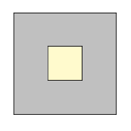
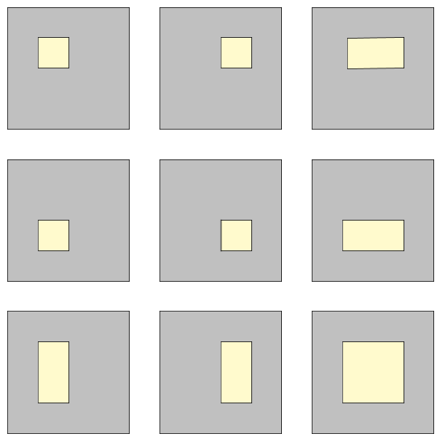

Project Euler 547
Project Euler 547
题目
Distance of random points within hollow square laminae
Assuming that two points are chosen randomly (with uniform distribution) within a rectangle, it is possible to determine the expected value of the distance between these two points.
For example, the expected distance between two random points in a unit square is about \(0.521405\), while the expected distance between two random points in a rectangle with side lengths \(2\) and \(3\) is about \(1.317067\).
Now we define a hollow square lamina of size \(n\) to be an integer sized square with side length \(n \ge 3\) consisting of \(n^2\) unit squares from which a rectangle consisting of \(x \times y\) unit squares \((1 \le x,y \le n - 2)\) within the original square has been removed.
For \(n = 3\) there exists only one hollow square lamina:

For \(n = 4\) you can find \(9\) distinct hollow square laminae, allowing shapes to reappear in rotated or mirrored form:

Let \(S(n)\) be the sum of the expected distance between two points chosen randomly within each of the possible hollow square laminae of size \(n\). The two points have to lie within the area left after removing the inner rectangle, i.e. the gray-colored areas in the illustrations above.
For example, \(S(3) = 1.6514\) and \(S(4) = 19.6564\), rounded to four digits after the decimal point.
Find \(S(40)\) rounded to four digits after the decimal point.
解决方案
假设设外层正方形是\(O=[0,n]\times[0,n], n\ge 3.\)挖去一个内层矩形\(H=[x_0,x_1]\times[y_0,y_1],\)其中\(1\le x_0<x_1\le n-1, 1\le y_0<y_1\le n-1.\)剩余区域 \(L=O\setminus H\)（空心方环层板）。
为了方便，我们定义一个积分\(\displaystyle\mathcal I(A,B)=\iint_{p\in A,q\in B}\|p-q\|dpdq.\)若区域 \(R\) 面积为 \(|R|\)，则随机两点期望距离\(\mathbb E_R=\dfrac{\mathcal I(R,R)}{|R|^2}.\)
对当前层板 \(L=O\setminus H\)，有\(\mathcal I(L,L)=\mathcal I(O,O)-2\mathcal I(O,H)+\mathcal I(H,H),\)因此
\[ \mathbb E_L=\frac{\mathcal I(O,O)-2\mathcal I(O,H)+\mathcal I(H,H)} {(n^2-(x_1-x_0)(y_1-y_0))^2}. \]
这就是每个洞对应的贡献。
我们需要快速算\(\mathcal I(R_1,R_2),\)其中\(R_1=[a,b]\times[c,d], R_2=[e,f]\times[g,h].\)令核函数\(K(u,v)=\sqrt{u^2+v^2}.\)设 \(P(u,v)\) 是 \(K\) 的一个二元原函数，满足\(\dfrac{\partial^2 P}{\partial u\partial v}=K(u,v).\)
现在我们先只考虑一维的情况，我们假设一个函数 \(\phi(t)\) 可积，并令 \(\Phi(t)\) 满足\(\Phi''(t)=\phi(t).\)对任意两段区间 \([a,b]\) 与 \([e,f]\)，我们证明：有\(\displaystyle \int_a^b\int_e^f \phi(x_2-x_1)dx_2dx_1=\sum_{i,j\in\{0,1\}}\sigma_i\sigma_j\Phi(x'_j-x_i),\)其中\(x_0=a,x_1=b, x'_0=e,x'_1=f, \sigma_0=-1,\sigma_1=1.\)
证明：对固定的 \(x_1\)，先积分 \(x_2\)：\(\displaystyle\int_e^f \phi(x_2-x_1)dx_2=\Phi'(f-x_1)-\Phi'(e-x_1).\)再对 \(x_1\) 积分，并分别对两项换元 \(t=f-x_1\) 与 \(t=e-x_1\)：\(\displaystyle\int_a^b \Phi'(f-x_1)dx_1=\Phi(f-a)-\Phi(f-b),\int_a^b \Phi'(e-x_1)dx_1=\Phi(e-a)-\Phi(e-b).\)相减后得到\(\displaystyle\Phi(f-a)-\Phi(f-b)-\Phi(e-a)+\Phi(e-b)=\sum_{i,j\in\{0,1\}}\sigma_i\sigma_j\Phi(x'_j-x_i),\)证毕。
类似扩展到二维的情况，可得
\[ \mathcal I(R_1,R_2)= \sum_{i,j,k,\ell\in\{0,1\}} \sigma_i\sigma_j\sigma_k\sigma_\ell P(x'_j-x_i,y'_\ell-y_k), \]
其中\(x_0=a,x_1=b,x'_0=e,x'_1=f,y_0=c,y_1=d,y'_0=g,y'_1=h,\sigma_0=-1,\sigma_1=1.\)即：16 个角点差值的符号和。
为了导出一个满足条件的\(P\)。我们考虑函数\(\Phi\)满足\(\Phi(0)=\Phi'(0)=0\)，从\(\Phi''=\phi\)出发，积分一次得到\(\displaystyle F'(u)=\int_0^u \phi(s)ds,\)再积分一次：有
\[ \Phi(u)=\int_0^u\Phi'(t)dt=\int_0^u\left(\int_0^t \phi(s)ds\right)dt=\int_0^u \left(\int_s^u dt\right)\phi(s)ds=\int_0^u (u-s)\phi(s)ds. \]
现在扩展到二维。令\(\phi(s)=K(s,v)\)，那么令\(\displaystyle Q(u,v)=\int_0^u (u-s)K(s,v)ds.\)使用两次这个结论，那么有：
\[\begin{aligned} P(u,v)&=\int_0^v (v-t)Q(u,t)dt\\ &=\int_0^v (v-t)\left[\int_0^u (u-s)K(s,t)ds\right]dt\\ &=\int_0^u\int_0^v (u-s)(v-t)K(s,t)dtds\\ &=\int_0^u\int_0^v (u-s)(v-t)\sqrt{s^2+t^2}dtds. \end{aligned} \]
令\(\displaystyle J(s)=\int_0^v (v-t)\sqrt{s^2+t^2}dt.\)那么就有\(\displaystyle P(u,v)=\int_0^u (u-s)J(s)ds.\)我们首先计算出\(J(s).\)
可见，\(\displaystyle J(s)=v\int_0^v \sqrt{s^2+t^2}dt-\int_0^v t\sqrt{s^2+t^2}dt.\)
对\(\displaystyle\int \sqrt{s^2+t^2}dt\)，那么令 \(t=s\sinh\theta\)，则 \(\sqrt{s^2+t^2}=s\cosh\theta,dt=s\cosh\theta d\theta\)，于是 \(\displaystyle\int \sqrt{s^2+t^2}dt=\int s^2\cosh^2\theta d\theta=\frac{s^2}{2}\bigl(\sinh\theta\cosh\theta+\theta\bigr).\)
换回 \(t=s\sinh\theta\)，有 \(\theta=\operatorname{asinh}(t/s),\sinh\theta\cosh\theta=\dfrac{t\sqrt{s^2+t^2}}{s^2}\)，所以\(\displaystyle\int \sqrt{s^2+t^2}dt=\frac12\Bigl(t\sqrt{s^2+t^2}+s^2\operatorname{asinh}\frac{t}{s}\Bigr).\)代入 \(0\to v\) 得
\[ \int_0^v \sqrt{s^2+t^2}dt =\frac12\Bigl(v\sqrt{s^2+v^2}+s^2\operatorname{asinh}\frac{v}{s}\Bigr). \]
对\(\displaystyle\int_0^v t\sqrt{s^2+t^2}dt\)，那么令 \(w=s^2+t^2\)，则 \(dw=2tdt\)，于是\(\displaystyle\int_0^v t\sqrt{s^2+t^2}dt=\frac12\int_{s^2}^{s^2+v^2} \sqrt{w}dw=\frac13\Bigl((s^2+v^2)^{3/2}-s^3\Bigr).\)因此
\[ J(s)=\frac v2\Bigl(v\sqrt{s^2+v^2}+s^2\operatorname{asinh}\frac{v}{s}\Bigr) -\frac13\left((s^2+v^2)^{3/2}-s^3\right). \]
再算 \(\displaystyle P(u,v)=\int_0^u (u-s)J(s)ds\)。把上式的 \(J(s)\) 代入后，积分项都是下面这几类的线性组合：
- \(\displaystyle \int (u-s)\sqrt{s^2+v^2}ds\)
- \(\displaystyle\int (u-s)(s^2+v^2)^{3/2}ds\)
- \(\displaystyle\int (u-s)s^3ds\)
- \(\displaystyle\int (u-s)s^2\operatorname{asinh}(v/s)ds\)
前三类都只需要用上面同样的双曲代换或代换 \(w=s^2+v^2\) 再配合分部积分即可完成；最后一类用分部积分，把 \(\operatorname{asinh}(v/s)\) 的导数\(\dfrac{d}{ds}\operatorname{asinh}\dfrac{v}{s}=-\dfrac{v}{s\sqrt{s^2+v^2}}\)转成含 \(\sqrt{s^2+v^2}\) 的可积形式，最后所有项都会整理成 \(\operatorname{asinh}\) 与 \(\sqrt{u^2+v^2}\) 乘多项式的组合。整理完可得到一个非常对称的闭式：
\[ P(u,v) =\frac{u^5+v^5}{60} +\frac{1}{24}\left(u^4v\operatorname{asinh}\frac{v}{u} +uv^4\operatorname{asinh}\frac{u}{v}\right) -\frac{1}{60}\sqrt{u^2+v^2}\left(u^4-3u^2v^2+v^4\right), (u>0,v>0). \]
观察16项差分：\(\displaystyle\sum_{i,j,k,\ell}\sigma_i\sigma_j\sigma_k\sigma_\ell,P(x'_j-x_i, y'_\ell-y_k),\)这种端点差分会把所有纯 \(u\)项和纯\(v\)项自动消掉。所以完全可以把\(\dfrac{u^5+v^5}{60}\)删掉，得到更短的代表：
\[ P(u,v)= \frac{1}{24}\left(u^4v\operatorname{asinh}\frac{v}{u} +uv^4\operatorname{asinh}\frac{u}{v}\right) -\frac{1}{60}\sqrt{u^2+v^2}\left(u^4-3u^2v^2+v^4\right), (u>0,v>0), \]
处理好后\(\mathcal{I}\)的计算过程后，即可回代到\(\mathbb E_L\)。对所有\(\mathbb{E}_L\)进行求和即可。
8. Python 实现
1 | import math |
代码
1 | from math import hypot, asinh |